Completed my M.S. in Computer Science at ASU
Graduated with a 4.0 GPA after earning top-5% marks in all 9 courses.
Machine learning engineer by profession; photographer, designer, and beatboxer by passion.
I’ve worked on production ML systems, large-scale research experiments, and projects involving LLMs, retrieval, computer vision, and multimodal AI.
I enjoy understanding a problem deeply, exploring its data, trying different approaches, and building the system around the solution. I find it especially interesting how engineering and modeling can turn raw data into useful patterns. I’m drawn to applied AI, ML systems, and products where machine learning is central.
I’ve always liked automating repetitive work and turning ideas into tools that are actually useful.
Selected work across production ML, applied AI, and research—built to solve concrete problems.
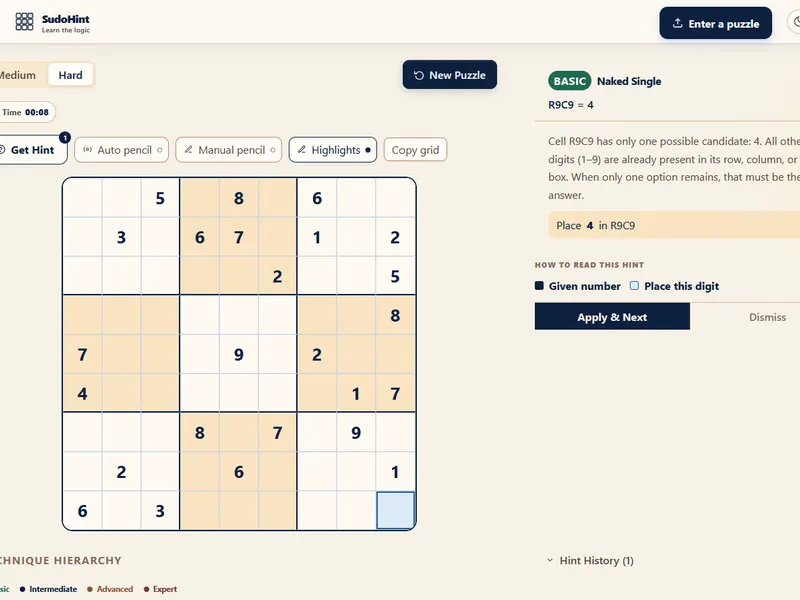
A client-side Sudoku learning app that manages 81-cell game state in real time and supports browser-only image import with grid detection, perspective correction, cell segmentation, and OCR review. It also includes validation, timers, responsive mobile UI, and auto- or manual-candidate modes without a backend.
A client-side Sudoku learning app with real-time game state, hints, image import, OCR review, and candidate-note tools.
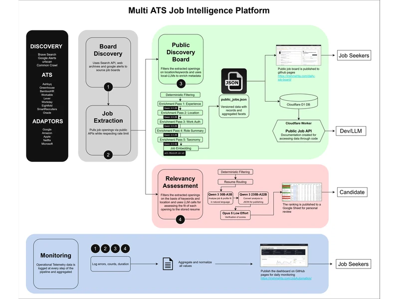
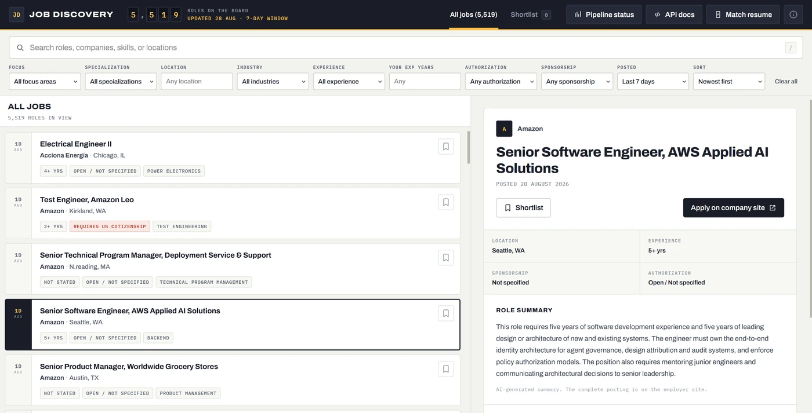
A multi-ATS job intelligence platform that ingests postings across 9K+ companies and 7 ATS platforms, filters relevant ML and data roles, and publishes a searchable dashboard for daily job discovery.
An automated job-discovery system that finds, ranks, and publishes ML and data opportunities, with tailored-resume generation for top matches.
Searching company-by-company was repetitive and made it difficult to consistently identify roles compatible with location, seniority, and work-authorization constraints.
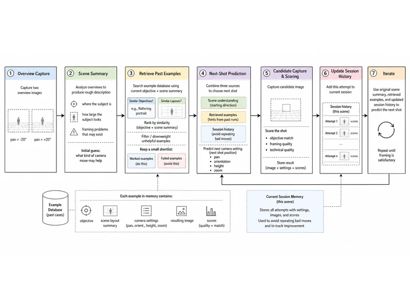
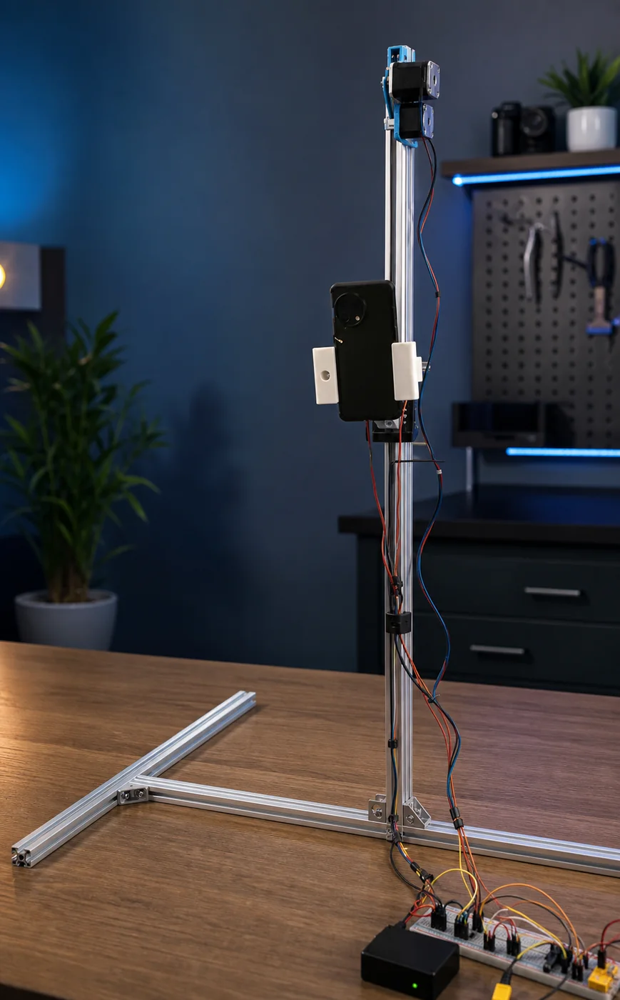
AutoFrame is an autonomous photography assistant that captures overview images, proposes better camera poses with Gemini reasoning, and iterates with Android and ESP8266 hardware support to optimize portrait framing.
An autonomous photography assistant that iteratively improves portrait framing by reasoning about a scene and moving a physical camera rig.
Getting a well-composed shot requires repeated manual camera adjustments and visual judgment.
Autonomously iterates toward stronger framing for up to 15 steps, stopping when the score reaches a threshold or improvement stalls.
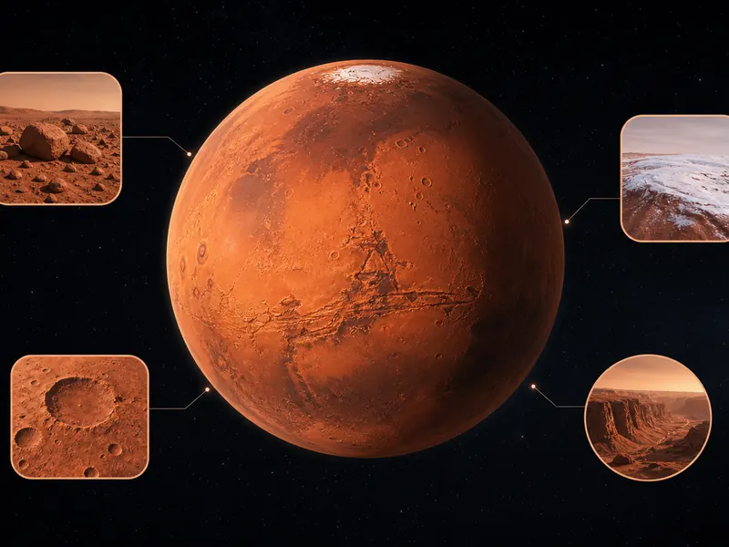
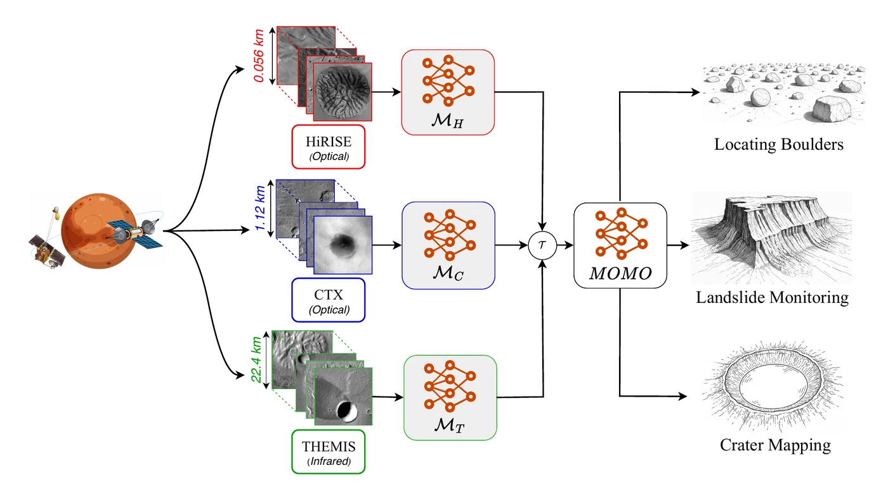
MOMO is a multi-sensor foundation model for Mars remote sensing that merges representations from HiRISE, CTX, and THEMIS and supports downstream tasks across a wide range of Martian orbital resolutions.
A multi-sensor foundation model that unifies Mars orbital imagery from HiRISE, CTX, and THEMIS for downstream remote-sensing tasks.
Martian sensors capture imagery at dramatically different resolutions, making direct combination of their representations inefficient.
MOMO outperformed ImageNet and Earth-observation baselines, averaging about a 1% mIoU gain on segmentation tasks and up to 4% on the Boulder dataset.
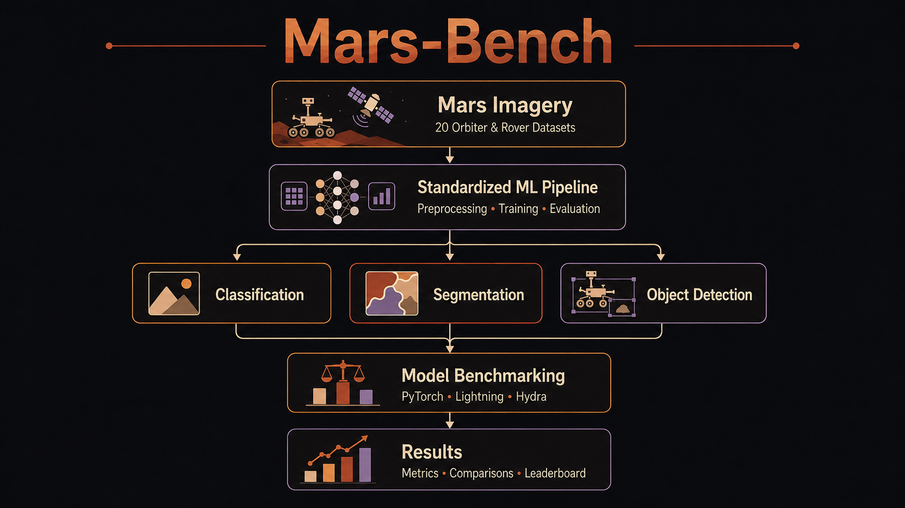
Mars-Bench brings 20 standardized datasets for classification, segmentation, and detection of Martian features like craters, cones, boulders, and frost, aiming to make evaluation consistent and to catalyze Mars‑specific foundation models.
A standardized benchmark of 20 Mars-vision datasets spanning classification, semantic segmentation, and object detection.
Martian imagery was difficult to compare across studies because datasets, task definitions, and evaluation conventions were fragmented.
Completed 19K+ model runs and 780 hyperparameter sweeps on ASU HPC infrastructure, establishing reproducible baselines for the benchmark.
An adaptive learning system driven by a Multi-Armed Bandit controller to optimize question difficulty in real-time. The architecture uses a Streamlit frontend, a Groq API-based question generator, and JSON for persistent progress saving.
An adaptive learning system that adjusts question difficulty in real time using Multi-Armed Bandit algorithms.
Fixed-difficulty practice does not respond to an individual learner's changing ability or distinguish long-term learning from a one-off assessment.
Provides persistent ability tracking and recommendations for learning, while keeping test sessions independent and resettable.
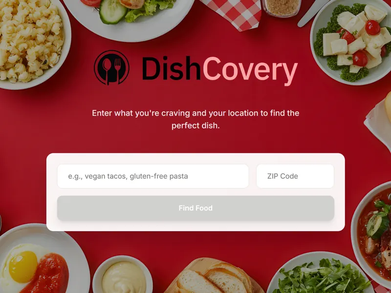
DishCovery is a food discovery app that analyzes restaurant menus and enables natural language query-based filtering of dishes and restaurants.
A food-discovery app that lets people search restaurant menus in natural language and filter by dietary needs, allergens, macros, and price.
Menu information is unstructured and makes it difficult to find a meal that satisfies several constraints at once.
Supports complex multi-constraint searches across a Tempe pilot dataset, with cached queries returning in under two seconds.
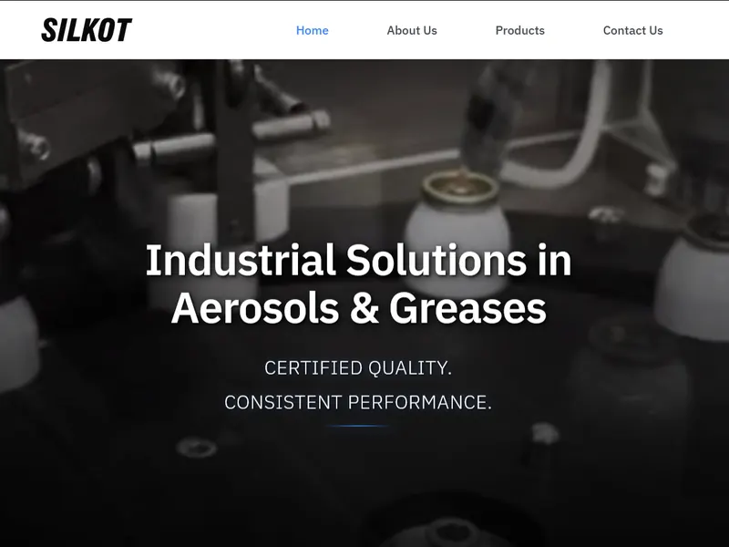
Designed and developed a responsive website for Silkot Silicones, a leading manufacturer of silicone products. The website features a clean, modern design with a focus on usability and SEO.
A production corporate website and digital product catalogue for an industrial silicone manufacturer.
The business needed a discoverable, secure, mobile-friendly way to present its product range and capture customer enquiries.
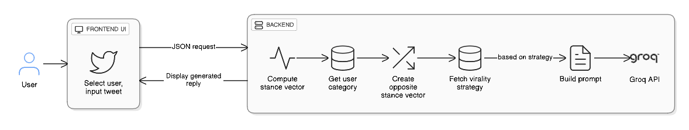
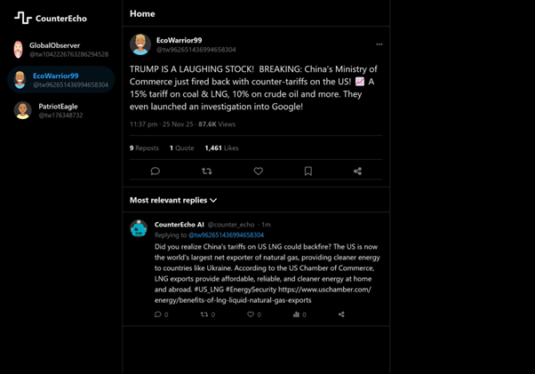
A vulnerability-based strategic counter-narrative system that analyzes social network data to generate targeted counter-narratives based on user vulnerability scores.
A strategic counter-narrative system that identifies social-media users susceptible to polarization and generates context-aware counter-messages.
Echo chambers reinforce polarized viewpoints, but a useful intervention needs to account for a user's stance and openness to alternative narratives.
Produces a user classification, stance vector, and targeted counter-message from a tweet, user ID, and political-camp context.
Earnings Call RAG Bot is a Retrieval-Augmented Generation system designed for analyzing and querying financial documents (Currently supports earnings call transcripts)
A session-based RAG system for asking grounded questions of earnings-call transcripts and financial documents.
Financial documents are lengthy and difficult to query quickly, while sensitive uploads require isolation between users.
Each session has an isolated vector store with automatic cleanup after 30 minutes of inactivity, supporting private, attributable document Q&A.
NLP‑powered bot that auto‑sorts Google Drive files into logical folders.
A content-based movie recommender that combines metadata, trailer visuals, and audience sentiment through composite ranking.
A content-based movie recommender that combines metadata, trailer visuals, and audience sentiment to find films with a similar feel.
Genre and cast alone do not capture the visual tone and audience reception that shape whether two films feel alike.
The best sentiment classifier, Linear SVC, achieved 90% accuracy and an 89.85% F1 score on IMDb reviews.
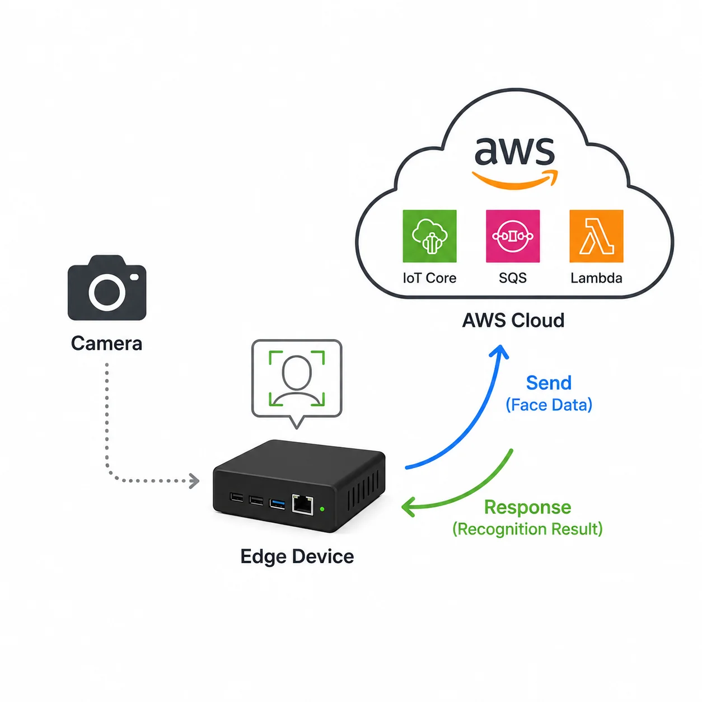
A distributed edge-AI system for real-time face detection and cloud-based recognition.
A distributed IoT system that detects faces on an edge device and performs cloud-based recognition.
Real-time recognition needs fast local detection without sending every frame through a cloud inference workflow.
Created a deployable edge-to-cloud recognition pipeline with MQTT, queued request/response handling, and Greengrass artifact deployment.
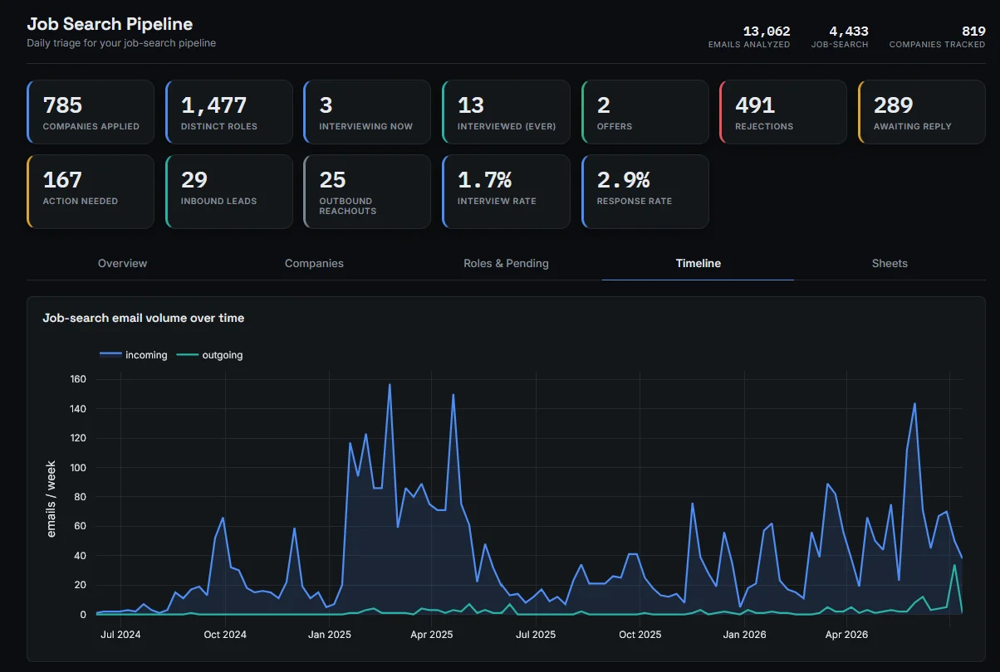
A local job-search analytics platform that turns a Gmail inbox into an editable application-management system.
A private, local analytics platform that imports Gmail, classifies job-search messages, and turns them into an editable application pipeline.
Manual inbox searching and fragmented tracking make it difficult to see application status, next actions, and recruiter activity.
Processed 13,403 emails into 4,658 job-search classifications, identifying 816 companies applied to and 1,547 distinct roles.
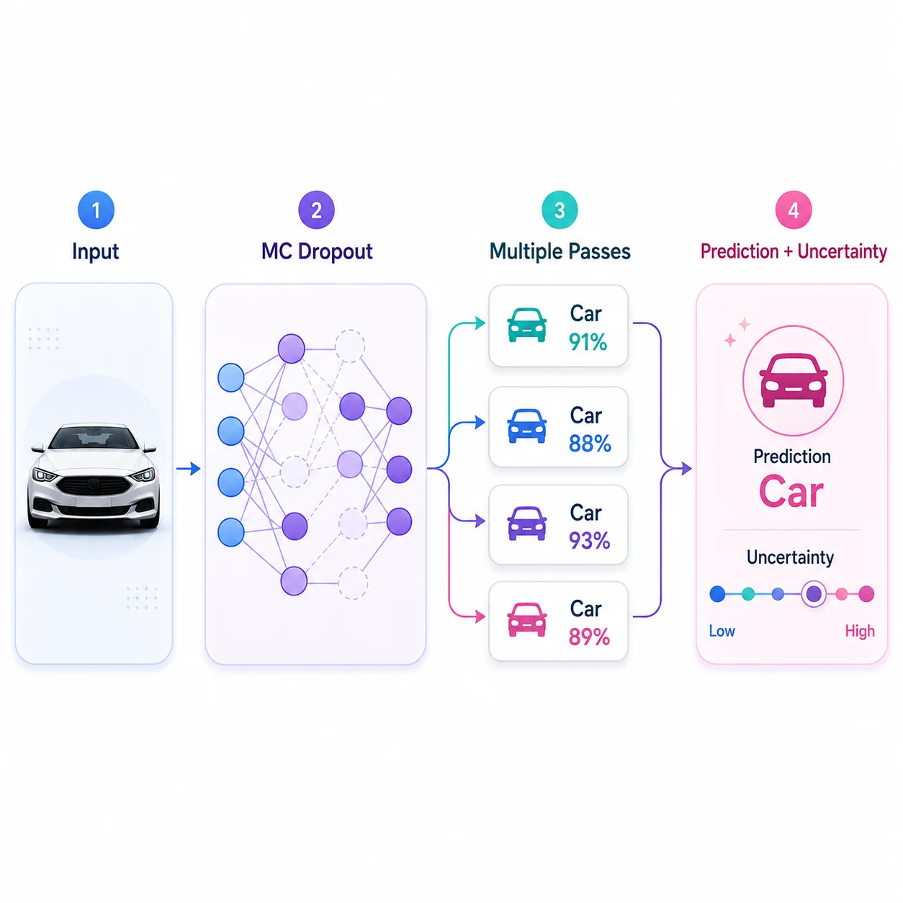
An evaluation of efficient dropout-based uncertainty estimation for vision models.
An evaluation of practical dropout-based methods for quantifying vision-model uncertainty during inference.
Monte Carlo dropout can require up to 1,000 forward passes per image, making uncertainty-aware inference computationally expensive.
Variance-based stopping reduced inference cost by over 95%; variational dropout achieved 89.75% accuracy with about 30 passes instead of 1,000.
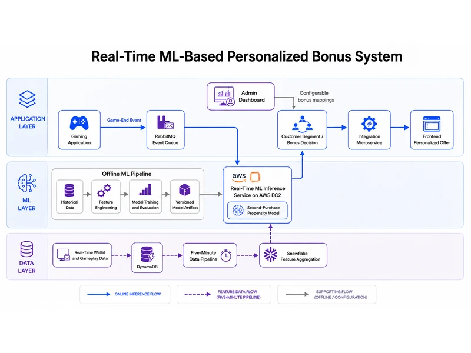
A near-real-time machine-learning system that predicts second-purchase propensity after game-end events and maps players to configurable personalized bonus segments.
An event-driven personalization system that scores players at the end of a game and selects an appropriate bonus using predicted second-purchase propensity.
Player incentives need to be timely and individualized while remaining configurable by business teams and consistent with the latest gameplay and wallet data.
Connected event-driven inference, configurable segmentation, and a frontend integration layer into a production flow for near-real-time personalized offers.
Selected projects that best represent my engineering and research work
Exploratory products, experiments, and working concepts
Deployed systems built for ongoing, real-world use
Published research and academic machine-learning work
A few recent milestones from my work across applied machine learning, research, and AI engineering
Graduated with a 4.0 GPA after earning top-5% marks in all 9 courses.
A software-assisted hardware system for automated photography.
A multisensor foundation model for Mars remote sensing.
Received the Best Poster Award at the NeurIPS ML for Physical Sciences Workshop.
Submitted a CVPR 2026 paper under the guidance of Dr. Hannah Kerner.
Built DishCovery, a food discovery app, at Sunhacks 2025.
Received acceptance for a NeurIPS paper in the Datasets and Benchmarks track.
Completed a summer internship at ASU’s ACME Lab focused on efficient uncertainty estimation in deep learning.
Submitted a NeurIPS 2025 paper in the Datasets and Benchmarks track.
Completed the Spring 2025 semester with a 4.22 GPA and top-5% marks in two courses.
Started working at Decision Theater at ASU.
Started volunteering at the Kerner Lab at ASU.
I’m open to machine-learning, applied AI, and research-engineering opportunities. If you’re building something interesting—or have a process that should be automated—send me a note.
ihmehta@asu.edu